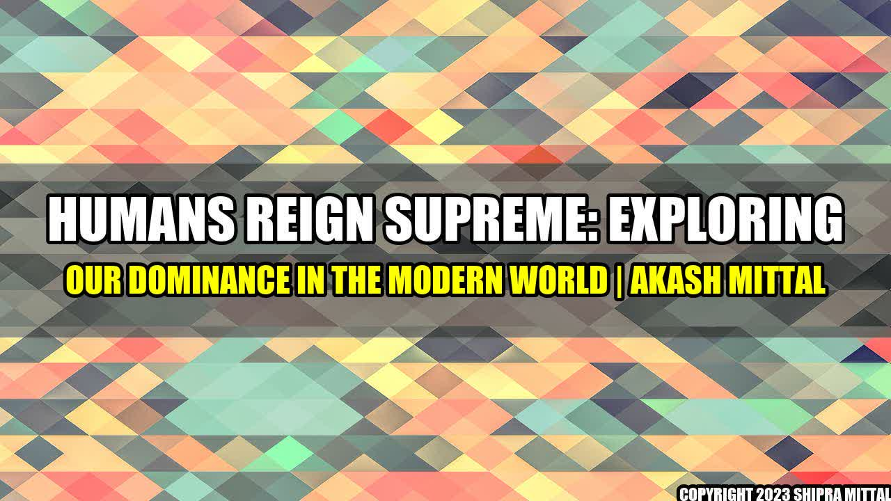

Humans Reign Supreme: Exploring Our Dominance in the Modern World

It was a bright sunny day in the heart of New York City. John, a successful businessman, was walking down the street towards his office when he noticed a group of pigeons pecking at the ground for food. Suddenly, he felt a sense of pride and superiority rush through him. He realized that humans are the dominant species on our planet and that nothing can compare to our intelligence, creativity, and adaptability.
Real Life Examples of Human Dominance
From ancient civilizations to modern-day society, humans have dominated the world in many ways:
- Language and communication: Humans have created a complex system of language and communication that allows us to convey ideas and emotions, and to cooperate on a massive scale. Companies like Google and Facebook have developed cutting-edge technologies to facilitate global communication and information-sharing.
- Technology and science: Humans have harnessed the power of science and technology to improve our lives and transform the world around us. Companies like Apple, Amazon, and Tesla are leading the way in innovation and creativity, pushing the boundaries of what humans are capable of achieving.
- Creation and art: Humans have a unique ability to create, invent, and express themselves through art, music, literature, and other forms of creativity. Companies like Netflix and Spotify are making it easier than ever for people to access and appreciate the work of talented artists and creators from all around the world.
Conclusion
While some may argue that our dominance is a result of our destructive tendencies and our failure to live in harmony with the natural world, it cannot be denied that humans have achieved incredible things throughout history. As we continue to evolve and advance as a species, it is important to recognize the power and responsibility that comes with our dominance. We must use our intelligence and creativity for the greater good of humanity and the planet we call home.
Reference URLs and Further Readings
Hashtags and SEO Keywords
- #humans #dominance #innovation #creativity #technology #art #communication #science #responsibility #evolution
- Humans Reign Supreme, Human Dominance in the Modern World, Real Life Examples of Human Dominance, John's Story, Importance of Human Responsibility
- Article Category: Research, Society, Culture, Humanities
About the Author
Akash Mittal is a freelance writer and researcher with a passion for exploring the complexities of human nature, culture, and society. He holds a bachelor's degree in English Literature and has written extensively on a wide range of topics, including history, philosophy, and technology. When he's not writing, Akash enjoys hiking, reading, and spending time with his family.
Akash Mittal Tech Article
Share on Twitter Share on LinkedIn